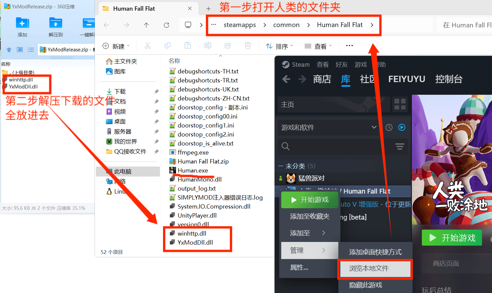

YxMod
YxMod 是《人类一败涂地》的娱乐模组，主打好玩、轻松、整活。定点、飞天、闪现、挂件这些功能都能直接体验。现在这个页面继续提供静态下载，项目本体已经闭源，后续主要通过 Issue 收集问题和建议。
你可以在这里下载最新静态包、看安装教程、进群交流，也可以去 GitHub Issues 反馈问题。普通玩家直接下载就行，遇到问题再来提。
想找人一起玩、问安装问题、看更新消息，直接进群会更快。
下载说明
页面已经移除 Gitee 下载入口，保留静态包和几个常用镜像链接。哪个下得顺手就用哪个，不需要纠结。
项目状态
现在项目已经闭源，不再公开主仓库代码。后续如果你发现 bug、安装失败、功能异常，或者有想提的建议，都统一走指定的 Issues 页面。
Issue 收集地址： https://github.com/kang-png/YxModDll-Static/issues
安装步骤
- 先下载压缩包，解压后会看到 `winhttp.dll` 和 `YxModDll.dll`。
- 在 Steam 里打开《人类一败涂地》的本地文件夹。
- 把这两个文件放进游戏目录里，和 `Human.exe` 放在一起。

无偿赞助
YxMod 目前仍然是免费提供给大家使用的。如果你觉得这个项目帮到了你，或者只是单纯想支持一下后续维护，可以随意赞助，不赞助也完全没关系。
语言与反馈
页面会根据浏览器语言自动切换为简体中文、English 或 한국어。为了方便测试，我加了一个隐藏入口：连续点击右上角语言区域 5 次，就能手动切换语言。